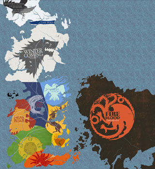
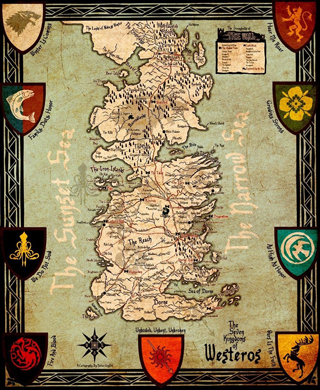

La carte de Westeros
 {kind=link}
{kind=link}
L'histoire de Westeross
Le royaume des Sept Couronnes est issu de l'unification progressive des royaumes morcelés des Premiers Hommes qu'ils avaient conquis aux territoires des enfants de la forêt, suite à l'invasion des Andals venus du grand continent est.
Cette invasion a donné lieu à la création de sept royaumes abritant des populations plus ou moins métissées entre les lignées des Premiers Hommes et des Andals. Les sept royaumes étaient antagonistes et ont connu de nombreux conflits frontaliers ainsi que de nombreuses invasions réciproques en fonction de l'ambition des souverains qui les dirigeaient, avant d'être progressivement unis sous la bannière des Targaryen, tout d'abord lors de la Conquête d'Aegon le Conquérant, puis sous le règne de ses descendants.
Malgré cette unification sous l'égide du Trône de Fer, la plupart des anciennes couronnes conservent une existence administrative en tant qu'entités géographiques distinctes placées sous la suzeraineté d'un vassal direct au Trône.
Les Stark de Winterfell, anciens rois du Nord qui descendent des Premiers Hommes, sont les suzerains du Nord. Winterfell est le fief de la maison Stark et l'une des places fortes les plus mythiques des Sept Couronnes, de par sa position géographique et sa construction, laquelle remonte à l'Âge des Héros et au légendaire Bran le Bâtisseur. Winterfell a ensuite été pendant huit mille ans le siège des rois du Nord et le cœur politique du Nord. C'est une puissante forteresse qui abrite dans la bourgade attenante les populations lors des hivers longs et rudes. Il y a toujours un Stark siégeant à Winterfell. Lorsque le seigneur en titre doit s'en absenter, l'aîné restant des membres de la famille y reste pour assurer la permanence de cette présence. Il est alors surnommé « le Stark de Winterfell ».
Dans le Nord, on trouve le Mur.
C'est une énorme muraille de glace de près de sept cents pieds de haut et de cent lieues de long d'est en ouest. Il sépare ainsi le royaume des Sept Couronnes des terres des sauvageons d'au-delà du Mur. Il est assez large pour permettre à douze cavaliers d'y chevaucher de front. Il est recouvert de glace massive et, lorsque les températures sont au-dessus de zéro, on dit qu'il suinte. La glace fond alors en surface et s'écoule le long des parois, entraînant sur son passage la neige présente en contrebas. A l'est le Mur s'étend jusqu'à la mer, et à l'ouest aucune armée conséquente ne peut le contourner car d'impressionnantes montagnes et les profondes Gorges de la Laiteuse ne permettent le passage qu'à des groupes restreints.
Retour au menu des maisons